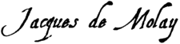
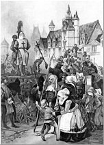
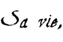
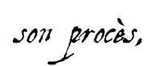
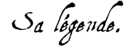

|  |
Le 18 mars 1314, les quatre chevaliers furent amenés au portail de Notre-Dame pour écouter leur sentence ; à savoir le « mur », la détention à perpétuité. Molay et Charnay avaient été soutenus jusque-là par l'assurance d'une délivrance prochaine, plusieurs fois promise : ils étaient en prison depuis sept ans ; ils refusèrent d'y rentrer désespérés. Dans son Histoire des chevaliers hospitaliers de Saint-Jean de Jérusalem, l'abbé de Vertot affirme qu'au moment où tous ses juges et tout Paris s'attendaient à voir Jacques de Molay confirmer publiquement ses prétendus aveux, « on fut bien surpris lorsque ce prisonnier secouant les chaînes dont il était chargé, s'avança jusqu'au bord de l'échafaud, d'une contenance assurée ; puis, élevant la voix pour être mieux entendu : il est bien juste, s'écria-t-il, que dans un si terrible jour, et dans les derniers moments de ma vie, je découvre toute l'iniquité du mensonge, et que je fasse triompher la vérité.
Je déclare donc, à la face du ciel et de la terre, et j'avoue quoiqu'à ma honte éternelle, que j'ai commis le plus grand de tous les crimes ; mais ce n'a été qu'en convenant de ceux que l'on impute avec tant de noirceur, à un ordre que la vérité m'oblige aujourd'hui de reconnaître pour innocent. Je n'ai même passé la déclaration qu'on exigeait de moi que pour suspendre les douleurs excessives de la torture, et pour fléchir ceux qui me les faisaient souffrir. Je sais les supplices que l'on a fait subir à tous ceux qui ont eu le courage de révoquer une pareille confession. Mais l'affreux spectacle qu'on me présente n'est pas capable de me faire confirmer un premier mensonge par un second, à une condition si infâme : je renonce de bon cœur à la vie qui ne m'est déjà que trop odieuse. Et que me servirait de prolonger de tristes jours que je ne devrais qu'à la calomnie ?… »
Illustre par sa naissance qui le faisait parent du roi, Geoffroy de Charnay, maître de Normandie et frère du dauphin d'Auvergne, confirma cette déclaration et s'associa au repentir de son maître. Les deux autres chevaliers présents persistèrent dans leurs aveux. Comme la foule remuait, les cardinaux, partageant le trouble commun et n'osant décider du sort des relaps, livrèrent sans délai au prévôt de Paris les deux confesseurs tardifs de la vérité ; le roi fut prévenu, et le conseil assemblé à l'instant les condamna à la mort, sans réformer la sentence des commissaires du pape, sans faire prononcer aucun tribunal ecclésiastique. Le soir du même jour, un échafaud se dressa, dans l'île de la Cité, en face du quai des Augustins. Les deux chevaliers, Molay et Charnay, montèrent sur le bûcher, que l'on alluma lentement, et ils furent brûlés à petit feu.
Aucun chroniqueur italien ne fut dupe du procès inique fait aux Templiers : ni Villani, ni Dino Compagni, ni Boccace (dont le père était à Paris à l'époque du procès), ni l'auteur des Storie Pistolesi, ni Dante (qui assista à l’exécution de Jacques de Molay). Tous ont goûté l'ironie d'une aventure où périrent comme hérétiques les plus fidèles serviteurs de la Cour romaine, les défenseurs les plus obstinés de la foi. Les écrivains français du temps furent, naturellement, plus prudents ; ils n'osaient s'inscrire en faux contre le pape et le roi, mais on voit bien ce qu'ils en pensent :
Bien gaaingnié l'avoient celz,
Se voirs estoit qu'en disoit d'elz… (si ce qu'on disait d'eux était vrai)
Plusieurs, ou monde condampnez
Sont lassus au ciel couronnez,
Et les aime Diex et tient chiers.
Mais ça aval (ici-bas), en ceste Eglise,
Nous convient trestouz (il nous faut tous) la devise
Tenir du pape et l'ordinance…
L'en puet bien decevoir (on peut bien tromper) l'Eglise ;
Mes l'en ne puet en nule guise (aucunement)
Diex decevoir ; je n'en dis plus. Qui voudra die le surplus.…/…
|  |